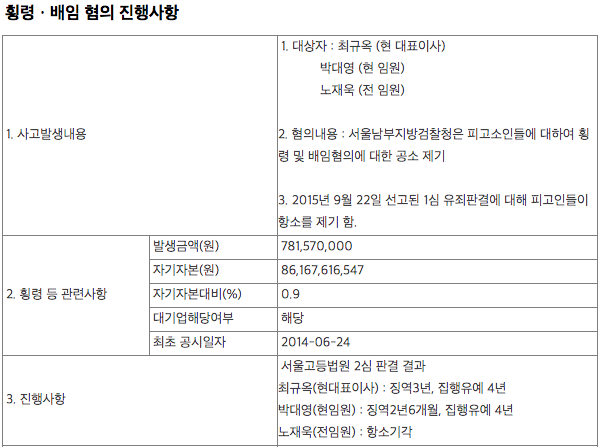
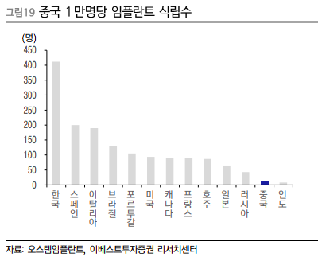

- 사업개요
- 산업의 특성
- 높은 진입장벽
- 치과의사(소비자)에 대한 교육시스템의 중요성이 큰 산업
- 과점화
당사는 국내 치과용 임플란트 1위 및 글로벌 임플란트 4위권의 전문기업이다. 치과용 임플란트란, 치아가 결손된 부위에 인공치근을 치조골에 이식하여 본래 자기치아와 같은 기능을 수행하는 이식체이다. 일반적으로 치조골에 이식하는 고정체와 크라운을 지지하는 상부를 합하여 임플란트라한다.
치과용 임플란트는 인체에 사용하기 때문에 생체 적합성과 골유착성 확보라는 두 가지 문제를 지니고있다. 이 두가지 문제를 해결하기 위해서는 표면처리와 정밀가공기술이라는 높은 수준의 기술을 요하고 있어 진입장벽이 높다고 할 수 있다.
또한 치과용 임플란트는 무균방진시설에서 정밀가공을 필요로 하는 제품으로 이를 위해 많은 설비투자와 함께 다년간의 임상자료, 학회발표 논문 등의 근거자료가 요구되는 산업으로 진입장벽이 상당하다 할 수 있다.
치과용 임플란트는 6개월~1년 정도의 교육을 받으면 어느 정도 수준에 도달할 수 있고 상대적으로 고수익을 창출할 기회를 의사들에게 제공하기 때문에 고유의 임플란트 교육프로그램을 운영하는 것이 중요하다.
2000년대 중반 약 100여개에 달했던 생산업체 수는 현재 40여개 이하로 감소되었으며 규모의 경제를 감안하면 상위업체가 가격경쟁측면에서도 우위에 설 수 밖에 없다.
1963년 국내에 임플란트가 소개되었으며 1990년부터 도입되었고 2014년 임플란트에 건강보험이 적용되었다. 당사는 치과용 소프트웨어 개발을 목적으로 1997년 설립되었으며 2000년 임플란트 제조업체 인수 후 임플란트를 주력 제품으로 하여 2000년부터 2006년까지 대략 연평균 140%의 매출성장률을 달성하였다. 2007년 코스닥 상장과 함께 글로벌 시장진출을 본격적으로 시작하였다. 이후 R&D 및 해외 영업망 확충을 통해 고성장을 지속하고 있다.
- 사업별 매출비중
- 국내시장점유율
- 해외시장점유율
- 경쟁력
- 풍부한 임상경험
- 최고의 기술력
- 토탈 솔루션
- 세계적인 임상교육 시스템 AIC
국내 시장은 상위 5개업체가 90%의 시장점유율을 차지하고 있는 명확한 과점 구도가 형성되어 신규업체가 의미있는 진입을 하기 제한적이며 당사는 국내 시장점유율의 50%를 차지하고 있다.
전 세계적으로 400개 이상의 업체가 있지만 상위 5개사(스트라우만, Danaher, Dentsply Sirona,
오스템임플란트, Zimmper Biomet)가 글로벌 시장 70%를 점유하는 과점 구도가 지속되고 있다.
우리나라는 만명당 임플란트 식립률이 412명으로 세계에서 압도적인 1위이다. 또한 국내 임플란트 시장은
국내업체들이 외국 업체를 대체하여 국내시장의 90%이상을 점유하고 있다. 이로 인해 동사를 포함한 국내업체들은
많은 임상경험과 피드백을 바탕으로 퀄리티 높은 제품을 개발할 수 있게 되었다.
당사가 세계적인 회사로 거듭날 수 있었던 것 가장 우수한 임플란트 기술력을 가지고 있기 때문이다.
지속적인 투자와 개발로 품질측면에서 세계 최고 수준이라고 자부할 수 있다.
토탈솔루션이란 치과에서 사용되는 인테리어부터 장비, 재료 등을 일괄공급하는 것을 지칭한다. 당사는 편리한 진료를 위하여 임플란트뿐만 아니라 치과관련 기자재의 토탈 솔루션을 제공할 계획이다. 특히 유니트체어의 경우 후발주자임에도 국내 유니트체어 시장에서 확고한 1위를 차지하고 있다. 영상진단장비 또한 지속적인 신제품 출시로 새로이 진행중인 치과 인테리어 사업과 함께 큰 시너지를 이루어낼 것으로 기대된다.
동사의 가장 강력한 경쟁요인 중 하나는 AIC(앞선 임플란트 교육센터 Apsun Dental
lmplant Research & Education Center)이다. 동사제품의 주요 소비자인 치과의사는
처음 접한 제품과 기구를 계속해서 사용하는 성향이 있다. 이러한 관점에서 볼 때 당사의 제품을 사용한
교육실습을 통해 자사의 제품을 사용하도록 유도함으로써 점유율이 지속적으로 증가될 것으로
예상된다. 또한 AIC는 현재 의사들 사이에서 평이 매우 좋은 것으로 알려져있다.
최대주주는 20.61%의 지분율을 가진 최규옥(님)이다. 최규옥 오스템임플란트 회장은 황무지나 다름없는 국내 임플란트 시장을 개척한 인물로 평가받고 있다. 그는 1997년 경기도에서 개인치과를 운영하였는데 이때까지만 해도 의료용 소프트웨어 개발 및 판매가 주요 사업이었다. 2001년 매물로 나온 임플란트 제조업체를 인수하며 본격적으로 임플란트 사업에 뛰어들었다. 고속성장을 이어가던 오스템임플란트는 2007년 코스닥에 상장했다. 이즈음 최 회장은 해외시장에 눈을 돌렸다. 대만을 시작으로 미국, 일본, 중국에 차례로 진출했다. 지난해 말 기준으로 오스템임플란트의 매출은 5650억원, 영업이익은 429억원을 기록했다. 현재 국내 및 아태 지역 점유율 1위, 세계시장 4위의 막강한 브랜드 경쟁력을 유지하고 있다.
그러나 2014년 창사 이래 수백억원대 리베이트 제공 및 해외법인 부당 지원혐의로 검찰 조사를 받게 되었고 불구속 기소되었으며 16년 징역 3년 집행유예 4년 형을 선고받았다.
위기를 타개하기 위해 동사는 2017년부터 전문경영인 체제로 전환하였으며 연구소장 출신인 엄태관
대표가 회사를 이끌게 되었고 최규옥회장은 2선으로 물러나게 되었다.
출처 : 시사저널(http://www.sisajournal.com)

(왼쪽부터 최규옥 회장, 엄태관 이사)
다음은 최규옥 회장의 인터뷰 내용이다.
Q. 향후 목표를 알려달라.
"직원 3만명과 함께하는게 목표다. 2034년까지 매년 20%씩 성장하려면 꼭 필요한 인력이다.
대략적으로 보면 60~70여개 치과의 교육과 영업을
관리할 인력 1만 5천명, 지원부서 인력이 7000명, 10%수준의 연구개발인력, 생산 인력 5000명 정도가
필요할 것이다."
또한 경영평가를 할 때 매출액 신장을 중요하게 생각한다. 거래처가 늘었다는 증거이기 때문이다.
이익은 10~15% 수준을 유지하면 된다. 나머진 사람 투자다.
출처 : 2019.09.23 중앙시사매거진 최규옥 오스템임플란트 회장 ‘자동차왕’ 포드가 일깨워준 ‘맨파워’
첫 번째는 뭐니뭐니해도 품질이다. 품질을 끌어올리기 위해 내부적으로 품질향상 전략회의를 거의 매일같이 했다. 그 결과 현재 각 항목별로 비교하면, 각 제품이 세계 톱 수준에 와있다고 자부한다. 단순히 가격이 저렴하다고 해서 소비자의 마음을 사로잡는 게 아니다. 한 예로 한국에서 가장 많이 사용되는 임플란트, 그리고 가장 비싼 임플란트 모두가 오스템이다. 비싼 가격에도 불구하고 많은 치과의사들이 사용하는 이유는 바로 품질 때문이다.
두 번째는 AIC를 통한 임상교육에 있다. 지금 가장 큰 시장 중 하나인 중국의 경우, 임플란트 시술을 할 줄 아는 치과의사 10중 6명을 AIC가 배출했다는 말이 있을 정도다.
Q. 국내시장이 포화되면서 해외시장으로 눈을 돌리게 된다. 오스템의 세계시장개척역사를 소개해달라.2005년 대만법인 설립을 시작으로 해외시장 공략을 본격화하기 시작했다. 지금은 전 세계 총
28개의 법인을 두고 있다. 그 중 가장 큰 시장은 단연 중국이다. AIC를 통한 임상교육은 물론이고
한국에서도 1년에 한 번 하는 오스템미팅을 중국에서는 4번 이상 개최하고 있다. 그 결과 올해
기준으로 중국에서만 1,000억원이 넘는 매출을 기록하고 있다.
해외수출이 늘고는 있지만, 만족할 만한 수준은 아니다. 또한 아직 진출하지 못한 국가도 너무 많다.
오스템은 2030년까지 현재 28개의 해외법인을 총 50개까지 늘릴 계획이다. 남미와 아프리카 등이
그 대상이다.
출처 : 2020.01.02 치과신문 [신년기획 인터뷰] 오스템임플란트 최규옥 회장
Q. 회사가 2분기 최대 실적을 기록했다. 코로나19 상황에서 인상적 수치다.
'자동차 경주에서 승부는 코너에서 갈린다'는 말이 있다. 오스템임플란트가 그간 고속성장하는 과정에서 운도 따랐는데, 코로나19라는 위기 상황에서 운도 좋았지만 실력도 받쳐줬다. 올해 2분기까지 메이저 1~3위 업체들이 모두 매출에서 30% 역성장했지만 우리는 1%올랐다. 거의 30%의 갭을 낸 것이다.
Q. 어떻게 가능했나.구체적으로 고객, 즉 치과의사 친화적 전략을 썼다. 코로나19로 상황이 어려워지니 당장 필요한 게 현금 확보다. 대부분의 회사들은 영업을 통해 돈을 확보한다. 다시 말해 고객한테서 밀린 돈을 받고, 물건을 줄 때도 돈을 먼저 받는 식이다. 그런데 우리는 대부분을 은행에서 차입해 고객에게는 금전적 말미를 줬다. 중국과 미국 모두 치과 셧다운되며 매출이 '제로'인데 돈을 달라 할 수 없지 않나. 오히려 돈 받는 시기를 미뤄주면서 신뢰를 쌓았다. 당연히 우리도 매출은 없었지만, 코로나19 상황이 나아지면서 우리에게 친화적인 환경이 조성됐다.
Q. 중국 시장 1위인데 어떻게 진출했고, 향후 계획은 어떤가.국내 임플란트가 20년 전에는 외국산 95%, 국산 5%였는데 지금은 반대다. 국산이 90%이며 그 중 절대다수가 오스템임플란트다. 우리는 한국에서 외국계과 싸워 이긴 노하우를 갖고 중국에 처음 들어갔고, 현지화 전략을 통해 사업을 넓히는 데 성공했다.
임플란트 시장은 치아 결손 인구와 경제 규모, 치과 의사라는 3요소가 갖춰져야 한다. 중국의 경우 치아 결손 인구와 경제력은 충분한데 치과의사가 부족하다. (중국 치과의사 가운데 임플란트 가능 인력은 15%수준) 그래서 우리는 임상 교육을 통해 향후 이 비중을 50%까지 늘릴 계획을 갖고 있다. 우리를 통해 교육을 받은 의사들이 나중에 오스템임플란트 제품을 쓰게 될 것이다. 또 우리는 중국에서 400여명의 영업사원을 직영으로 운영하고 있다. 인원 수가 많으니 투자자 분들이 지적하는데, 우리는 영업사원이 비용이 아니고 투자라 생각한다. 중국에서 1위를 한 원동력이다.
Q. 굳이 직영으로 영업사원을 관리하는 이유가 있나.의료기기업계는 대부분 딜러 영업을 한다. 딜러는 크게 두 종류로, 임플란트를 하는 딜러와 신규 딜러로 나눠진다. 이 가운데 기존에 임플란트를 했던 딜러는 세계 1위인 업체를 담당하는 만큼 우리 제품을 더 많이 팔기 어렵다. 우리가 처음에 딜러 영업을 했다가 직영으로 바꾼 이유다.
Q. 끝으로 투자자들에게 전하고 싶은 말을 해달라.오스템임플란트는 장기적인 비전을 가진 회사다. 그 과정에서 손익보단 성장을 우선시해왔는데 이에 대해 투자자분들이 싫어하는 측면이 있었다. 그래서 지난해부터 그 부분을 개선해 올해부터 성장과 손익의 균형을 맞추고 있다. 아울러 오스템임플란트는 지금껏 그래왔듯 앞으로도 약속을 지키는 회사, 투자자들이 예측 가능한 회사가 될 것이라 말씀드린다.
출처 : 2020.11.03 인포스탁데일리(http://www.infostockdaily.co.kr)- 우수한 품질 합리적인 가격 동사의 제품은 국내에서 시장점유율 1위를 차지할 만큼 품질 측면에서 우수하며 오랜 업력과 많은 임상실험 으로 업계에서 최고로 인정받고 있다. 국내 뿐만 아니라 해외시장에서도 반응이 좋은데 이는 품질은 우수하며 가격 또한 세계 1위인 스트라우만의 제품보다 50% 저렴하기 때문이다.
- 정부정책 : 건강보험적용 건강보험 보장성 강화 정책의 일환으로 18년 7월부터는 65세 이상 노인 임플란트에 대한 본인 부담률이 50%에서 30%로 경감되었다. 수입산제품은 보험에 적용되지 않기에 보험 확대 적용의 수혜는 내수 점유율이 높은 상위 업체에 고스란히 돌아갈 예정이며 오스템의 경우 국내 임플란트 시장의 40% 이상을 점유하고 있다.
- AIC 교육시스템 동사의 제품은 품질도 품질이지만 치과의사들 사이에서 호평이 난 것은 AIC 교육시스템이다. 치과의사의 경우 치대에서 임플란트 실습과 관련된 내용을 제대로 배우기가 쉽지 않다고 한다. 그렇기에 동사는 치과의사들을 대상으로 하는 세미나를 개최하여 치과의사들을 교육하고 있다. 세미나에서 자사의 제품으로 교육이 진행되기 때문에 자연스레 동사의 제품이 홍보가 되고 이에 따라 치과의사들은 오스템임플란트의 제품을 사용하게 된다. 동사가 제공하는 토탈솔루션과 치과의사 교육시스템은 국내에서 스트라우만도 가지지 못한 체계로 치과의사들 사이에서도 정평이 나있다.
- 최대주주 리스크 창업자인 최규옥 회장은 배임·횡령, 성추문 등에 휘말린 바 있다. 이에 따라 2016년 최 회장은 약 7억 8천여만원 규모의 횡령 및 배임 혐의로 2심에서 징역 3년, 집행유예 4년을 선고받았다.(2심 확정)
- 과징금 이슈 동사는 19년 5월 2014년도 부터 2018년도까지 세무조사결과 415억원의 과징금을 맞게 되었다. 추징금은 폐기제품의 처리를 판매비용으로 볼 수 있었는지에 대한 부분에서 발생하였다. 오스템임플란트는 반품 임플란트중 폐기가 불가피한 제품을 매출에서 차감하고 관련 비용을 매출원가에 가산시켜왔는데 국세청은 이를 비용으로 인정하지 않아 자기자본 1260억원의 33%인 415억원의 과징금을 부과하였다.
- 성숙기에 다다른 시장 80% 이상의 치과의사가 임플란트 시술역량을 갖추고 있어 시장은 성숙기에 진입한 것으로 보인다.
그러나 2020년 9월 심의 끝에 오스템임플란트가 승소하여 270억원의 과징금을 돌려받았고 나머지 140억원에 대해서는 현재 심의가 진행중이다. 
- 고령화 성숙기에 진입한것으로 보이나 고령인구의 확대 및 보험정책의 확대 등으로 지속적인 성장이 기대된다. 글로벌 시장 또한 기대가 되는 부분이다. 세계 55세이상 인구 비중은 2050년에는 25%(26억명)에 달할 것으로 예상된다. 특히 한국, 일본, 중국 등 동아시아지역에서는 고령화가 급속도로 진행되고 있다. 반면 아직까지 임플란트 시술을 선택하는 비율은 20% 수준에 불과하여 성장 잠재력이 매우 높을 것으로 보인다.
- 중국시장에 대한 기대 
- 글로벌시장에서의 가격우위 임플란트 제품간의 품질 차이가 크지 않은 만큼 점차 가격이 제품선택에 중요한 결정 요소로 자리잡아 가고 있다. 동사는 신흥국시장에서의 합리적인 가격정책을 펼치고 있는데 프리미엄브랜드인 스트라우만과 같은 업체들 보다는 약 50%저렴하게 로컬 저가 임플란트 보다는 가격대를 약간 높게 책정하고 있다. 이 전략이 성공한 이유는 1). 전 세계에서 임플란트 시술이 가장 발달한 국가의 제품이라는 이미지. 2). 로컬 업체 대비 압도적인 임상 데이터(15년 이상 축적)보유로 요약된다.
- 연구소장 출신의 전문경영인체제 최규옥 회장의 성추문, 횡령, 배임 등의 문제가 터질 때 마다 동사의 주가 또한 하락세를 보였다. 이에 따라 최규옥 회장의 직접경영은 리스크로 보여 2017년 3월 연구소장 출신의 엄태관 대표이사 체제로 전환하였다. 업계에서는 오너의 지배력이 사실상 막강한 '오너 체제'에서 연구소장 출신의 전문경영인을 수장으로 앉힌 것이 오스템이 글로벌 기업으로 도약하는데 힘을 실어줄 것으로 보고 있다.
임플란트 시장은 치아 결손 인구와 경제 규모, 치과 의사라는 3요소가 갖춰져야 한다. 중국의 경우 경제력은 충분하다고 볼 수 있다. 그러나 임플란트 식립률이 만명당 10명이 안 될 정도로 낮은 수치를 보이며 시술을 할 수 있는 의사 또한 현재 부족한 상황이다. (중국 치과의사 가운데 임플란트 가능 인력은 15%수준)
오스템임플란트는 현재 중국에서만 지역별로 6개 판매법인을 운영 중이며, 해외법인 중 매출액과
이익규모가 가장 크다. 글로벌 업체 중심으로 심화되고 있는 시장경쟁 상황을 감안해 현재의
시장점유율(28%, 추정)을 유지한다면 2020년 중국 임플란트 시장규모는 4,800억원(+20% yoy)이
전망된다. 같은 기간 동사의 중국 매출액도 1,478억원(+17% yoy)으로 시장성장률 수준의
실적 달성이 가능할 전망이다.
(출처 : 이베스트투자증권)
Threat(위협) :
- 최대주주 리스크 주식은 기업과 동행하며 최대주주와 동업을 하는 것이다. 2016년 최규옥 회장은 2016년 배임·횡령으로 휘말린 바 있다. 이에 따라 주가는 출렁였으며 시장의 신뢰를 다시 얻기 까지 상당한 시간이 걸렸다. 이에 아직 수면위로 드러나지 않은 문제가 존재하거나 발생할 경우 회사는 시장의 외면을 받을 수 있다.
- 무리한 영업확장 최규옥회장의 임직원 3만명의 목표를 마냥 좋은 시선으로 바라 볼 수는 없다. 일각에서는 무리하게 영업확장을 하는 것이 아니냐는 우려 섞인 시선이 존재한다.
- CB발행 동사는 20년 10월 30일 운영자금을 위해 500억원의 전환사채(CB)를 발행하였다. 전환사채의 행사가는 38000원으로 행사가능기한은 23년 4월 29일부터이다. 계약 내용 중 다행인 것은 500억원 중 200억원에 대해서는 콜옵션이 있으며 이자는 0%라는 점이다. 아마 동사의 현재 주가가 낮다는 시장의 평가가 있어 0%로 발행 가능했던 것이 아닌가 생각한다. 어찌되었든 기존주주입장에서는 주가가 희석될 여지가 있어 좋지 않은 소식임에는 분명하다. 따라서 벨류에이션을 할 때 현재 시총 7000억원에 CB 500억원을 가산하여 구해야 한다.
- 국내경쟁업체 성장가도를 달리던 동사에게 덴티움이라는 잠재적인 경쟁업체가 등장하였다. 덴티움은 국내시장점유율 16%로 2위를 차지 하고 있지만 최근 중국시장에서의 성장이 가파르다. 뿐만 아니라 덴티움은 외국기업으로 중국 내 임플란트 제조 인허가 취득을 처음으로 받아 향후 당사에게 있어 가장 큰 경쟁업체가 될 가능성이 높다.
동사는 20.8.18 중동시장에 진출하여 총 28개의 해외법인을 운영 중에 있다. 하지만 28개의 해외법인 중 흑자를 보고 있는 법인은 6개 밖에 없으며 나머지 22개법인은 손실을 기록하고 있다.